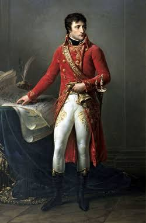

En la madrugada de este histórico día, el cura Don Miguel Hidalgo y Costilla ha hecho sonar con ímpetu las campanas de la parroquia de Dolores, convocando de emergencia a toda la feligresía para levantarse en armas contra el mal gobierno virreinal.
Tras ser alertados a altas horas de la noche por el capitán Juan Aldama sobre la traición y el descubrimiento de la Conspiración de Querétaro, los patriotas decidieron no esperar su inminente aprehensión. Con el célebre grito de libertad y enarbolando el estandarte sagrado de la Virgen de Guadalupe tomado en el santuario de Atotonilco, dio comienzo formal la lucha por la independencia de la América Septentrional.
Cientos de campesinos, artesanos, trabajadores de las minas e indígenas armados con machetes, hondas y lanzas se han sumado al contingente insurgente que marcha con firmeza hacia San Miguel el Grande, Celaya y Guanajuato, sumando a más de cuatro mil hombres en sus filas en cuestión de horas.
❖ ❖ ❖
EL ANTECEDENTE OLVIDADO: LA CONSPIRACIÓN DE VALLADOLID DE 1809
El movimiento en Dolores no nace del vacío, sino que continúa los esfuerzos iniciados un año atrás en la provincia de Michoacán. En septiembre de 1809, el teniente José Mariano Michelena, el cura fray Vicente de Santa María y el teniente José María García Obeso organizaron una conspiración clandestina en la ciudad de Valladolid.
Aquella junta buscaba constituir un congreso americano para preservar la soberanía de la Nueva España frente a la amenaza de dominación francesa tras la prisión del rey Fernando VII. Aunque la conspiración de 1809 fue descubierta y sofocada por las autoridades virreinales antes de estallar, sentó las bases organizativas y el contacto con los líderes que hoy encabezan la insurrección en Querétaro y Guanajuato.
❖ ❖ ❖
DETALLES DE LA CONSPIRACIÓN DE QUERÉTARO Y SU HALLAZGO
Desde principios del presente año, una red secreta de intelectuales y militares venía reuniéndose bajo la apariencia de una "Sociedad Literaria" en la casa del Corregidor Miguel Domínguez y su esposa Doña Josefa Ortiz. El plan original contemplaba iniciar el levantamiento el próximo 1 de octubre en la feria de San Juan de los Lagos.
Sin embargo, tras las delaciones hechas ante las autoridades virreinales por el capitán Joaquín Arias y el comerciante Manuel Leaño, la guarnición realista ordenó cateos inmediatos. La rápida intervención de Doña Josefa permitió enviar al alférez Ignacio Pérez para avisar a Allende en San Miguel y a Hidalgo en Dolores, acelerando las acciones militares de esta madrugada.
❖ ❖ ❖
EL COMBATE EN GUANAJUATO Y LA TOMA DE LA ALHÓNDIGA
El primer gran enfrentamiento a gran escala de esta guerra ha tenido lugar en la rica e importante provincia minera de Guanajuato. Ante la imponente marcha del ejército rebelde, el intendente realista Don Antonio Riaño ordenó a la aristocracia, tropa y familias peninsulares atrincherarse en la Alhóndiga de Granaditas junto con los principales caudales y grano de la región.
Tras horas de feroz tiroteo y resistencia desde los muros del fortín, la victoria insurgente fue posible gracias al heroísmo del joven minero Juan José Martínez, conocido popularmente como "El Pípila". Cubierto a la espalda con una pesada losa de piedra para protegerse del fuego balístico realista, avanzó con brea y antorcha hasta prender fuego al portón principal de madera de la Alhóndiga, permitiendo la irrupción de las tropas rebeldes y la toma definitiva de la plaza.
❖ ❖ ❖
LA BATALLA DEL MONTE DE LAS CRUCES Y LA MARCHA A LA CAPITAL
Tras la toma de Guanajuato y la ocupación sin resistencia de la ciudad de Valladolid, el ejército libertador encaminó sus pasos hacia el valle de México. En el paraje montañoso conocido como el Monte de las Cruces, las fuerzas insurgentes se enfrentaron directamente con el ejército regular realista comandado por el teniente coronel Torcuato Trujillo.
A pesar de la superioridad en disciplina y artillería del ejército del virrey Venegas, la aplastante cantidad numérica y el empuje de las filas de Hidalgo lograron una victoria decisiva. Con las puertas de la Ciudad de México abiertas de par en par, Miguel Hidalgo ha tomado la controvertida determinación de ordenar la retirada estratégica hacia el occidente, buscando reorganizar el ejército y evitar un saqueo sangriento en la capital del virreinato.
❖ ❖ ❖
PROCLAMAS Y MANIFIESTOS DEL ALTO MANDO INSURGENTE
En sus primeras resoluciones dictadas al frente del ejército popular, el mando insurgente encabezado por Don Miguel Hidalgo e Ignacio Allende ha promulgado medidas radicales inmediatas para la reorganización social:
Abolición total de la esclavitud: Otorgando la libertad a todos los hombres y mujeres sometidos a cautiverio bajo pena de muerte a quien infrinja esta orden.
Cese de los tributos e impuestos: Supresión del pago del tributo personal para indígenas y castas.
Restitución de tierras: Devolución de las tierras de cultivo a los pueblos originarios.
Prohibición del monopolio: Eliminación de las alcabalas y del estanco de la pólvora y el tabaco.
❖ ❖ ❖
LA INVASIÓN NAPOLEÓNICA Y LA CRISIS EN LA METRÓPOLI

Napoleón Bonaparte
La abdicación forzada del rey Fernando VII tras la invasión de las tropas francesas comandadas por Napoleón Bonaparte a la Península Ibérica en 1808 creó un vacío de soberanía en todos los dominios españoles.
Este hecho desencadenó la conformación de juntas secretas en Querétaro y Valladolid, donde los criollos reclamaron el derecho legítimo de gobernarse a sí mismos mientras durase la usurpación del trono en España.